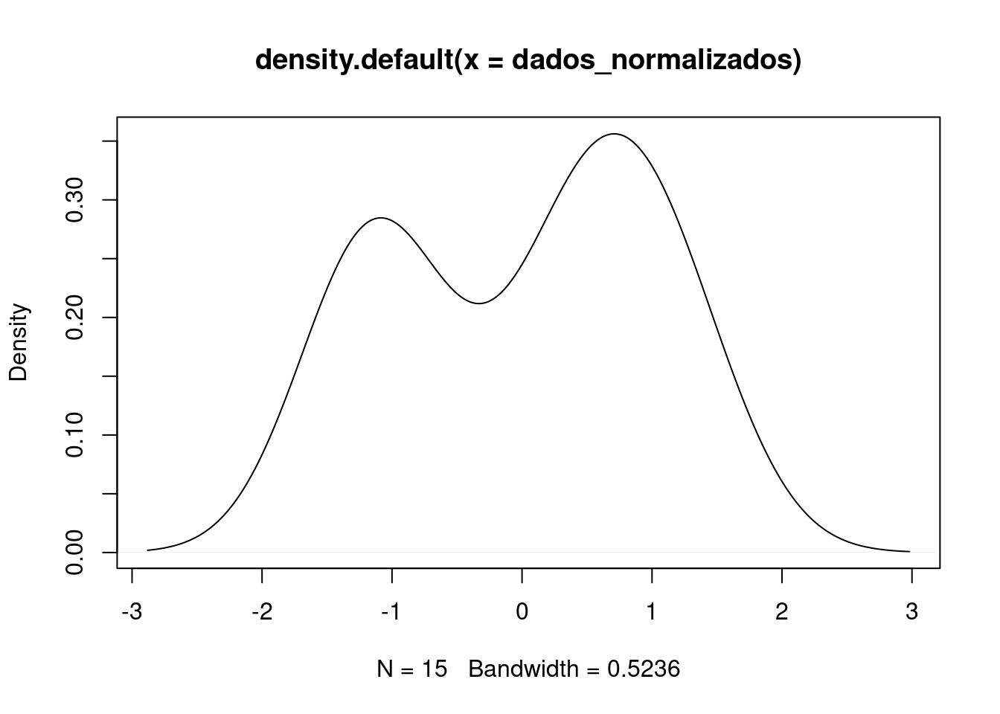
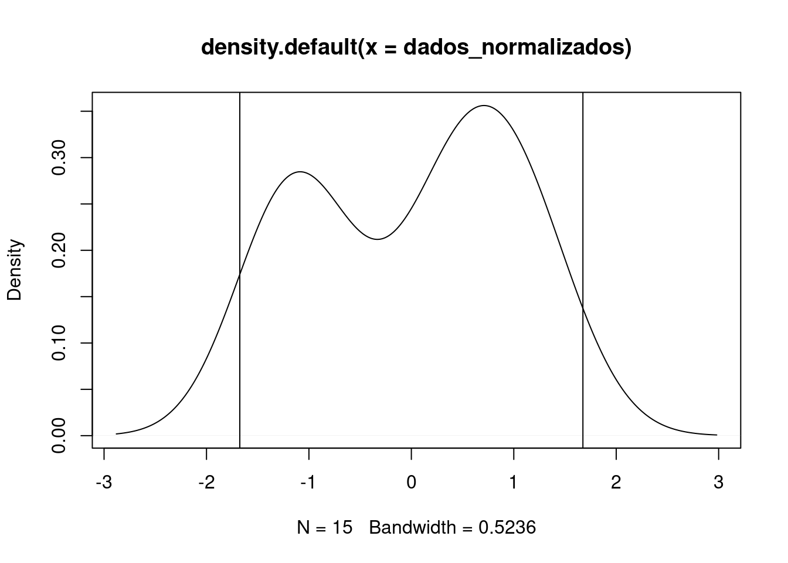

Exercício - Estatística Descritiva
Exercício 1
Considere 15 peças com tamanhos diferentes, sejam eles 40, 45,41,48,49,42,47,46,41,40,40,45,46,47,48 cm, calcule:
Os dados são:
b) Utilize a função pnorm() para calcular a função de densidade acumulada (P(x)) para toda a série, o que significa o primeiro valor dessa série?
A função pnorm retorna a probabilidade acumulada de um população. Pra usar tem que informar qual a média e qual o desvio padrão da população:
## [1] 0.09520175 0.57982432 0.15691446 0.86605664 0.92074617 0.24038825
## [7] 0.78981406 0.69273232 0.15691446 0.09520175 0.09520175 0.57982432
## [13] 0.69273232 0.78981406 0.86605664O primeiro valor dos resultados é a probabilidade de um valor ser menor que 40 (o primeiro valor dos dados)
c) Normalize os dados com média zero e desvio padrão unitário, utilize apenas as funções mean() e sd() para tal
Os dados podem ser normalizados com a diferença de cada valor até a média dividido pelo desvio padrão, com a expressão: \[\frac{x-\overline{X}}{S}\]
Onde \(x\) é cada valor, \(\overline{X}\) é a média e \(S\) o desivio padrão. Então da pra fazer:
## [1] -1.3093864 0.2014441 -1.0072203 1.1079423 1.4101084 -0.7050542
## [7] 0.8057762 0.5036102 -1.0072203 -1.3093864 -1.3093864 0.2014441
## [13] 0.5036102 0.8057762 1.1079423Essa expressão dá os valores do eixo x para uma distribuição de média zero e desvio padrão igual a 1. Dá pra visualizar assim:

d) Calcule os intervalos de confiança da média
Cada valor do resultado do item anterior é o valor z (o eixo x) dos dados normalizados. O intervalo de confiança é calculado por: \[IC = z \times \frac{S}{\sqrt{n}}\]
Considerando um intervalo de confiança de 95%, como ele explicou na aula, o z de 95% em uma distribuição normal é \(\pm 1,96\). Então é só fazer:
# numero de amostras, o "tamanho" (length) dos dados
n <- length(dados)
ic <- 1.96 * desvio / sqrt(n)
media; media + ic; media - ic## [1] 44.33333## [1] 46.00814## [1] 42.65853As amostras que tenham entre esses valores de média tem 95% de probabilidade de pertencerem à essa população. Dá pra visualizar:

## integer(0)e) Teste se essa distribuição é normal. Discuta.
Pra testar a normalidade é possível usar o teste de Shapiro-Wilk. A hipótese do teste é de que a distribuição é normal. Se o p-valor for maior que 0,05 aceita-se a hipótese nula, a distruição é normal. Se for menor, rejeita-se a hipótese, a distribuição não é normal.
##
## Shapiro-Wilk normality test
##
## data: dados_normalizados
## W = 0.87911, p-value = 0.04601O p-valor é menor que 0,05, então a distribuição não é normal (dá pra ver nos gráficos acima que não é, mesmo sem o teste)
Exercício 2
Utilizando o dataset mtcars:
mtcars é um dataset que vem junto com o R. Dá para usar para fazer testes/treinar. Para ver o dataset é só usar mtcars:
## mpg cyl disp hp drat wt qsec vs am gear carb
## Mazda RX4 21.0 6 160 110 3.90 2.620 16.46 0 1 4 4
## Mazda RX4 Wag 21.0 6 160 110 3.90 2.875 17.02 0 1 4 4
## Datsun 710 22.8 4 108 93 3.85 2.320 18.61 1 1 4 1
## Hornet 4 Drive 21.4 6 258 110 3.08 3.215 19.44 1 0 3 1
## Hornet Sportabout 18.7 8 360 175 3.15 3.440 17.02 0 0 3 2
## Valiant 18.1 6 225 105 2.76 3.460 20.22 1 0 3 1a) Qual a estrutura desse objeto? Quais são os tipos de vetores contidos nesse objeto?
Para ver a estrutura, usar str:
## 'data.frame': 32 obs. of 11 variables:
## $ mpg : num 21 21 22.8 21.4 18.7 18.1 14.3 24.4 22.8 19.2 ...
## $ cyl : num 6 6 4 6 8 6 8 4 4 6 ...
## $ disp: num 160 160 108 258 360 ...
## $ hp : num 110 110 93 110 175 105 245 62 95 123 ...
## $ drat: num 3.9 3.9 3.85 3.08 3.15 2.76 3.21 3.69 3.92 3.92 ...
## $ wt : num 2.62 2.88 2.32 3.21 3.44 ...
## $ qsec: num 16.5 17 18.6 19.4 17 ...
## $ vs : num 0 0 1 1 0 1 0 1 1 1 ...
## $ am : num 1 1 1 0 0 0 0 0 0 0 ...
## $ gear: num 4 4 4 3 3 3 3 4 4 4 ...
## $ carb: num 4 4 1 1 2 1 4 2 2 4 ...b) Calcule uma matriz de correlação (correlograma) para toda a série, discuta 2 pares a sua escolha
Para calcular a matriz de correlação, usar cor:
| mpg | cyl | disp | hp | drat | wt | qsec | vs | am | gear | carb | |
|---|---|---|---|---|---|---|---|---|---|---|---|
| mpg | 1.00 | -0.85 | -0.85 | -0.78 | 0.68 | -0.87 | 0.42 | 0.66 | 0.60 | 0.48 | -0.55 |
| cyl | -0.85 | 1.00 | 0.90 | 0.83 | -0.70 | 0.78 | -0.59 | -0.81 | -0.52 | -0.49 | 0.53 |
| disp | -0.85 | 0.90 | 1.00 | 0.79 | -0.71 | 0.89 | -0.43 | -0.71 | -0.59 | -0.56 | 0.39 |
| hp | -0.78 | 0.83 | 0.79 | 1.00 | -0.45 | 0.66 | -0.71 | -0.72 | -0.24 | -0.13 | 0.75 |
| drat | 0.68 | -0.70 | -0.71 | -0.45 | 1.00 | -0.71 | 0.09 | 0.44 | 0.71 | 0.70 | -0.09 |
| wt | -0.87 | 0.78 | 0.89 | 0.66 | -0.71 | 1.00 | -0.17 | -0.55 | -0.69 | -0.58 | 0.43 |
| qsec | 0.42 | -0.59 | -0.43 | -0.71 | 0.09 | -0.17 | 1.00 | 0.74 | -0.23 | -0.21 | -0.66 |
| vs | 0.66 | -0.81 | -0.71 | -0.72 | 0.44 | -0.55 | 0.74 | 1.00 | 0.17 | 0.21 | -0.57 |
| am | 0.60 | -0.52 | -0.59 | -0.24 | 0.71 | -0.69 | -0.23 | 0.17 | 1.00 | 0.79 | 0.06 |
| gear | 0.48 | -0.49 | -0.56 | -0.13 | 0.70 | -0.58 | -0.21 | 0.21 | 0.79 | 1.00 | 0.27 |
| carb | -0.55 | 0.53 | 0.39 | 0.75 | -0.09 | 0.43 | -0.66 | -0.57 | 0.06 | 0.27 | 1.00 |
c) Dos pares escolhidos, podemos dizer que são estaticamente significativos em 5% de significância? Discuta.
A hipótese do teste de correlação de pearson é de que não há correlação significativa entre dois dados. Assim, se o p-valor for maior que 0,05 (5% de significância), aceita-se que não há correlação significativa. Senão, rejeita-se a hipótese e considera-se que há sim correlação.
A função cor não calcula o p-valor, tem que usar a cor.test ou outra que faça isso:
# pra calcular as correlacoes:
cor_mpg_disp <- cor.test(mtcars$mpg, mtcars$disp)
cor_carb_drat <- cor.test(mtcars$carb, mtcars$drat)
# ver o p-valor:
cor_mpg_disp$p.value; cor_carb_drat$p.value## [1] 9.380327e-10## [1] 0.6211834É possível ver que entre as variáveis mpg e disp, existe correlação significativa a 5% de significância (p \(<\) 0,05), mas entre carb e drat, não (p \(>\) 0,05).